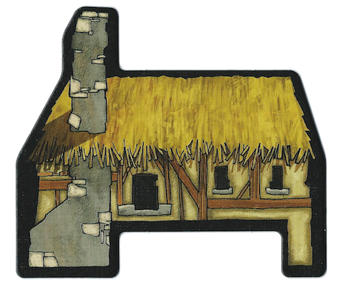

The Hovel: Occupied by the Bonesetter

(Unique Power)
- At any point during the day, the Bonesetter can make a player regain the unique power for a building that they’ve already used. The Moderator hands the token which represents the power linked to their building back to the selected player (for a new unique use).